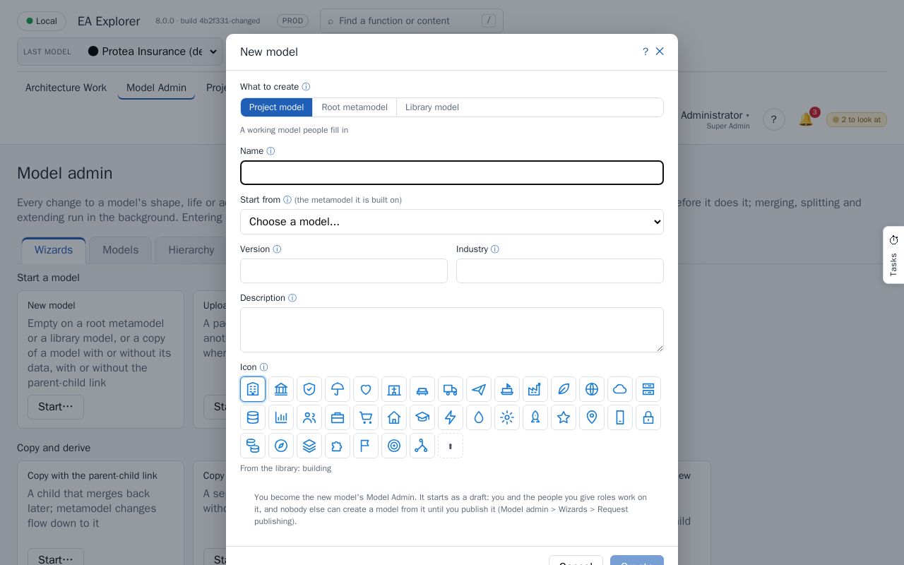

Make a model from a metamodel workbook
For: Industry model makers, Model Admin
A new model whose metamodel comes from a workbook.

#/model-admin/wizards?wizard=newWhy do this
Once a metamodel is designed in a workbook, EA Explorer checks it and builds a model on it, ready for content. See Metamodels: the shape of a model.
A metamodel change ripples: into what people may record, what reports read, what rules check and what integrations send. That is why it goes through drafts and review, and why each version is kept and can be compared.
In TOGAF terms: The content framework and content metamodel: what building blocks and relationships the architecture may hold. See EA Explorer and the TOGAF Standard.
The goal: A model is built from the metamodel you designed in Excel.
Before you start You need the Model Creator role.
Steps
- Download the empty metamodel workbook; fill in the types, attributes and allowed relationships.
- New model, A model from a metamodel workbook: choose the file.
- Read the checks; Create the model.